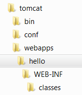
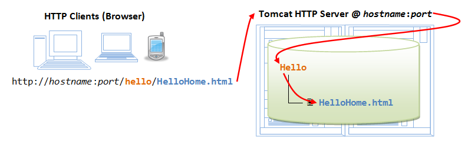

This practical can be completed in a 3-hour session.
This installation and configuration guide is applicable to Tomcat 7 and 8, and possibly the earlier versions.
Take note that Tomcat 8 requires JDK 1.7. It will NOT work with JDK 1.6. If your JDK is below 1.7, upgrade it (See JDK How-To). You can check your JDK version via command "javac -version".
Introduction
Web Application (Webapp)
A web application (or webapp), unlike standalone application, runs over the Internet. Examples of webapps are google, amazon, ebay, facebook and twitter.
A webapp is typically a 3-tier (or multi-tier) client-server database application run over the Internet as illustrated in the diagram below. It comprises five components:
- HTTP Server: E.g., Apache HTTP Server, Apache Tomcat Server, Microsoft Internet Information Server (IIS), nginx, Google Web Server (GWS), and others.
- HTTP Client (or Web Browser): E.g., Internet Explorer (MSIE), FireFox, Chrome, Safari, and others.
- Database: E.g., Open-source MySQL, Apache Derby, mSQL, SQLite, PostgreSQL, OpenOffice's Base; Commercial Oracle, IBM DB2, SAP SyBase, MS SQL Server, MS Access; and others.
- Client-Side Programs: could be written in HTML Form, JavaScript, VBScript, Flash, and others.
- Server-Side Programs: could be written in Java Servlet/JSP, ASP, PHP, Perl, Python, CGI, and others.
The typical use-case is:
- A user, via a web browser (HTTP client), issues a URL request to an HTTP server to start a webapp.
- A client-side program (such as an HTML form) is loaded into client's browser.
- The user fills up the query criteria in the form.
- The client-side program sends the query parameters to a server-side program.
- The server-side program receives the query parameters, queries the database and returns the query result to the client.
- The client-side program displays the query result on the browser.
- The process repeats.
Hypertext Transfer Protocol (HTTP)
- HTTP is an application layer protocol runs over TCP/IP. The IP provides support for routing and addressing (via an unique IP address for machines on the Internet); while TCP supports multiplexing via 64K ports from port number 0 to 65535. The default port number assigned to HTTP is TCP port 80.
- HTTP is an asynchronous request-response application-layer protocol. A client sends a request message to the server. The server then returns a response message to the client.
- HTTP is a pull protocol, a client pulls a page from the server (instead of server pushes pages to the clients).
- The syntax of the message is defined in the HTTP specification.

Apache Tomcat HTTP Server
Apache Tomcat is a Java-capable HTTP server, which could execute special Java programs known as Java Servlet and Java Server Pages (JSP). It is the official Reference Implementation (RI) for Java Servlets and JavaServer Pages (JSP) technologies. Tomcat is an open-source project, under the "Apache Software Foundation" (which also provides the most use, open-source, industrial-strength Apache HTTP Server). The mother site for Tomcat is http://tomcat.apache.org. Alternatively, you can find tomcat via the Apache mother site @ http://www.apache.org.
Tomcat was originally written by James Duncan Davison (then working in Sun), in 1998, based on an earlier Sun's server called Java Web Server (JWS). It began at version 3.0 after JSWDK 2.1 it replaced. Sun subsequently made Tomcat open-source and gave it to Apache.
The various Tomcat releases are:
- Tomcat 3.x (1999): RI for Servlet 2.2 and JSP 1.1.
- Tomcat 4.x (2001): RI for Servlet 2.3 and JSP 1.2.
- Tomcat 5.x (2002): RI for Servlet 2.4 and JSP 2.0.
- Tomcat 6.x (2006): RI for Servlet 2.5 and JSP 2.1.
- Tomcat 7.x (2010): RI for Servlet 3.0, JSP 2.2 and EL 2.2.
- Tomcat 8.x (2013): RI for Servlet 3.1, JSP 2.3, EL 3.0 and Java WebSocket 1.0.
Tomcat is an HTTP application runs over TCP/IP. In other words, the Tomcat server runs on a specific TCP port in a specific IP address. The default TCP port number for HTTP protocol is 80, which is used for the production HTTP server. For test HTTP server, you can choose any unused port number between 1024 and 65535.
How to Install Tomcat 8 and Get Started with Java Servlet Programming
STEP 1: Download and Install Tomcat
NOTE: At the time of writing, Tomcat 9 is at the alpha stage, not stable release. We shall install Tomcat 8.0.30.
For Windows
- Goto http://tomcat.apache.org ⇒ Downloads ⇒ Tomcat 8.0 ⇒ "
8.0.{xx}" (where{xx}is the latest upgrade number) ⇒ Binary Distributions ⇒ Core ⇒ "ZIP" package (e.g., "apache-tomcat-8.0.{xx}.zip", about 8 MB). - Create your project directory, say "
d:\myProject" or "c:\myProject". UNZIP the downloaded file into your project directory. Tomcat will be unzipped into directory "d:\myProject\apache-tomcat-8.0.{xx}". - For ease of use, we shall shorten and rename this directory to "
d:\myProject\tomcat".
Take note of Your Tomcat Installed Directory. Hereafter, I shall refer to the Tomcat installed directory as <TOMCAT_HOME>.
For Mac OS X
- Goto http://tomcat.apache.org ⇒ Download ⇒ Tomcat 8.0 ⇒ "
8.0.{xx}" (where{xx}denotes the latest upgrade number) ⇒ Binary distribution ⇒ Core ⇒ "tar.gz" package (e.g., "apache-tomcat-8.0.{xx}.tar.gz", about 8 MB). - To install Tomcat:
- Goto "
~/Downloads", double-click the downloaded tarball (e.g., "apache-tomcat-8.0.{xx}.tar.gz") to expand it into a folder (e.g., "apache-tomcat-8.0.{xx}"). - Move the extracted folder (e.g., "
apache-tomcat-8.0.{xx}") to "/Applications". - For ease of use, we shall shorten and rename this folder to "tomcat".
- Goto "
Take note of Your Tomcat Installed Directory. Hereafter, I shall refer to the Tomcat installed directory as <TOMCAT_HOME>.
For Ubuntu
Read "How to Install Tomcat 8 on Ubuntu". You need to switch between these two articles.
For academic learning, I recommend "zip" (or "tar.gz") version, as you could simply delete the entire directory when Tomcat is no longer needed (without running any un-installer). You are free to move or rename the Tomcat's installed directory. You can install (unzip) multiple copies of Tomcat in the same machine. For production, it is easier to use the installer to properly configure the Tomcat.
Tomcat's Directories
Take a quick look at the Tomcat installed directory. It contains the following sub-directories:
- bin: contains the binaries; and startup script (
startup.batfor Windows andstartup.shfor Unixes and Mac OS X), shutdown script (shutdown.batfor Windows andshutdown.shfor Unix and Mac OS X), and other binaries and scripts. - conf: contains the system-wide configuration files, such as
server.xml,web.xml,context.xml, andtomcat-users.xml. - lib: contains the Tomcat's system-wide JAR files, accessible by all webapps. You could also place external JAR file (such as MySQL JDBC Driver) here.
- logs: contains Tomcat's log files. You may need to check for error messages here.
- webapps: contains the webapps to be deployed. You can also place the WAR (Webapp Archive) file for deployment here.
- work: Tomcat's working directory used by JSP, for JSP-to-Servlet conversion.
- temp: Temporary files.
STEP 2: Create an Environment Variable JAVA_HOME
(For Windows)
You need to create an environment variable called "JAVA_HOME" and set it to your JDK installed directory.
- First, find your JDK installed directory. The default is "
c:\Program Files\Java\jdk1.8.0_{xx}", where{xx}is the upgrade number. Take note of your JDK installed directory. - To set the environment variable
JAVA_HOMEin Windows 7/8/10: Start "Control Panel" ⇒ System ⇒ Advanced system settings ⇒ Switch to "Advanced" tab ⇒ Environment Variables ⇒ System Variables ⇒ "New" ⇒ In "Variable Name", enter "JAVA_HOME" ⇒ In "Variable Value", enter your JDK installed directory as noted in Step 1. - To verify, RE-START a CMD shell (restart needed to refresh the environment) and issue:
SET JAVA_HOME JAVA_HOME=c:\Program Files\Java\jdk1.8.0_{xx} <== Verify that this is YOUR JDK installed directory
(For Mac OS X)
Skip this step. No need to do anything.
STEP 3: Configure Tomcat Server
The Tomcat configuration files are located in the "conf" sub-directory of your Tomcat installed directory, e.g. "d:\myProject\tomcat\conf" (for Windows) or "/Applications/tomcat/conf" (for Mac OS X). There are 4 configuration XML files:
server.xmlweb.xmlcontext.xmltomcat-users.xml
Make a BACKUP of the configuration files before you proceed.
Step 3(a) "conf\server.xml" - Set the TCP Port Number
Use a programming text editor (e.g., NotePad++, TextPad for Windows; or gEdit, jEdit for Mac OS X) to open the configuration file "server.xml", under the "conf" sub-directory of Tomcat installed directory.
The default TCP port number configured in Tomcat is 8080, you may choose any number between 1024 and 65535, which is not used by an existing application. We shall choose 9999 in this article. (For production server, you should use port 80, which is pre-assigned to HTTP server as the default port number.)
Locate the following lines (around Line 69) that define the HTTP connector, and change port="8080" to port="9999".
<!-- A "Connector" represents an endpoint by which requests are received and responses are returned. Documentation at : Java HTTP Connector: /docs/config/http.html (blocking & non-blocking) Java AJP Connector: /docs/config/ajp.html APR (HTTP/AJP) Connector: /docs/apr.html Define a non-SSL HTTP/1.1 Connector on port 8080 --> <Connector port="9999" protocol="HTTP/1.1" connectionTimeout="20000" redirectPort="8443" />
Step 3(b) "conf\web.xml" - Enabling Directory Listing
Again, use a programming text editor to open the configuration file "web.xml", under the "conf" sub-directory of Tomcat installed directory.
We shall enable directory listing by changing "listings" from "false" to "true" for the "default" servlet. This is handy for test system, but not for production system for security reasons.
Locate the following lines (around Line 103) that define the "default" servlet; and change the "listings" from "false" to "true".
<!-- The default servlet for all web applications, that serves static --> <!-- resources. It processes all requests that are not mapped to other --> <!-- servlets with servlet mappings. --> <servlet> <servlet-name>default</servlet-name> <servlet-class>org.apache.catalina.servlets.DefaultServlet</servlet-class> <init-param> <param-name>debug</param-name> <param-value>0</param-value> </init-param> <init-param> <param-name>listings</param-name> <param-value>true</param-value> </init-param> <load-on-startup>1</load-on-startup> </servlet>
Step 3(c) "conf\context.xml" - Enabling Automatic Reload
We shall add the attribute reloadable="true" to the <Context> element to enable automatic reload after code changes. Again, this is handy for test system but not for production, due to the overhead of detecting changes.
Locate the <Context> start element (around Line 19), and change it to <Context reloadable="true">.
<Context reloadable="true">
......
......
</Context>
Step 3(d) (Optional) "conf\tomcat-users.xml"
Enable the Tomcat's manager by adding the highlighted lines, inside the <tomcat-users> elements:
<tomcat-users> <role rolename="manager-gui"/> <user username="manager" password="xxxx" roles="manager-gui"/> </tomcat-users>
This enables the manager GUI app for managing Tomcat server.
STEP 4: Start Tomcat Server
The Tomcat's executable programs and scripts are kept in the "bin" sub-directory of the Tomcat installed directory, e.g., "d:\myProject\tomcat\bin" (for Windows) or "/Applications/tomcat/bin" (for Mac OS X).
Step 4(a) Start Server
For Windows
Launch a CMD shell. Set the current directory to "<TOMCAT_HOME>\bin", and run "startup.bat" as follows:
// Change the current directory to Tomcat's "bin" // Assume that Tomcat is installed in "d:\myProject\tomcat" d: // Change the current drive cd \myProject\tomcat\bin // Change Directory to YOUR Tomcat's "bin" directory // Start Tomcat Server startup
For Mac OS X
I assume that Tomcat is installed in "/Applications/tomcat". To start the Tomcat server, open a new "Terminal" and issue:
// Change current directory to Tomcat's binary directory cd /Applications/tomcat/bin // Start tomcat server ./catalina.sh run
A new Tomcat console window appears. Study the messages on the console. Look out for the Tomcat's port number (double check that Tomcat is running on port 9999). Future error messages will be send to this console. System.out.println() issued by your Java servlets will also be sent to this console.
...... ...... xxx xx, xxxx x:xx:xx xx org.apache.coyote.AbstractProtocol start INFO: Starting ProtocolHandler ["http-bio-9999"] xxx xx, xxxx x:xx:xx xx org.apache.coyote.AbstractProtocol start INFO: Starting ProtocolHandler ["ajp-bio-8009"] xxx xx, xxxx x:xx:xx xx org.apache.catalina.startup.Catalina start INFO: Server startup in 2477 ms
(Skip Unless ...) Cannot Start Tomcat: Read "How to Debug".
Step 4(b) Start a Client to Access the Server
Start a browser (as HTTP client). Issue URL "http://localhost:9999" to access the Tomcat server's welcome page. The hostname "localhost" (with IP address of 127.0.0.1) is meant for local loop-back testing inside the same machine. For users on the other machines over the net, they have to use the server's IP address or DNS domain name or hostname in the format of "http://serverHostnameOrIPAddress:9999".

Try issuing URL http://localhost:9999/examples to view the servlet and JSP examples. Try running some of the servlet examples.
(Optional) Try issuing URL http://localhost:9999/manager/html to run the Tomcat Web Manager. Enter the username and password configured earlier in tomcat-users.xml.
Step 4(c) Shutdown Server
For Windows
You can shutdown the tomcat server by either:
- Press Ctrl-C on the Tomcat console; OR
- Run "
<TOMCAT_HOME>\bin\shutdown.bat" script. Open a new "cmd" and issue:// Change the current directory to Tomcat's "bin" d: // Change the current drive cd \myProject\tomcat\bin // Change Directory to YOUR Tomcat's "bin" directory // Shutdown the server shutdown
For Mac OS X
To shutdown the Tomcat server:
- Press Control-C (NOT Command-C) on the Tomcat console; OR
- Run the "
<TOMCAT_HOME>/bin/shutdown.sh" script. Open a new "Terminal" and issue:// Change current directory to Tomcat's bin directory cd /Applications/tomcat/bin // Shutdown the server ./shutdown.sh
WARNING: You MUST properly shutdown the Tomcat. DO NOT kill the cat by pushing the window's "CLOSE" button.
STEP 5: Develop and Deploy a WebApp
Step 5(a) Create the Directory Structure for your WebApp
First of all, choose a name for your webapp. Let's call it "hello". Goto Tomcat's "webapps" sub-directory. Create the following directory structure for you webapp "hello" (as illustrated):
- Under Tomcat's "
webapps", create your webapp root directory "hello" (i.e., "<TOMCAT_HOME>\webapps\hello"). - Under "
hello", create a sub-directory "WEB-INF" (case sensitive, a "dash" not an underscore) (i.e., "<TOMCAT_HOME>\webapps\hello\WEB-INF"). - Under "
WEB-INF", create a sub-sub-directory "classes" (case sensitive, plural) (i.e., "<TOMCAT_HOME>\webapps\hello\WEB-INF\classes").
You need to keep your web resources (e.g., HTMLs, CSSs, images, scripts, servlets, JSPs) in the proper directories:
- "
hello": The is called the context root (or document base directory) of your webapp. You should keep all your HTML files and resources visible to the web users (e.g., HTMLs, CSSs, images, scripts, JSPs) under this context root. - "
hello/WEB-INF": This directory, although under the context root, is not visible to the web users. This is where you keep your application's web descriptor file "web.xml". - "
hello/WEB-INF/classes": This is where you keep all the Java classes such as servlet class-files.
You should RE-START your Tomcat server to pick up the hello webapp. Check the Tomcat's console to confirm that "hello" application has been properly depolyed:
......
INFO: Deploying web application directory D:\myProject\tomcat\webapps\hello
......
You can issue the following URL to access the web application "hello":
http://localhost:9999/hello
You should see the directory listing of the directory "<TOMCAT_HOME>\webapps\hello", which shall be empty (provided you have enabled directory listing in web.xml earlier).
Step 5(b) Write a Welcome Page
Create the following HTML page and save as "HelloHome.html"
in your application's root directory "hello".
1 2 3 4 5 6 |
<html>
<head><title>My Home Page</title></head>
<body>
<h1>My Name is so and so. This is my HOME.</h1>
</body>
</html>
|
You can browse this page by issuing this URL:
http://localhost:9999/hello/HelloHome.html
Alternatively, you can issue an URL to your web application root "hello":
http://localhost:9999/hello
The server will return the directory listing of your base directory. You can then click on "HelloHome.html".
Rename "HelloHome.html" to "index.html", and issue a directory request again:
http://localhost:9999/hello
Now, the server will redirect the directory request to "index.html", if the root directory contains an "index.html", instead of serving the directory listing.
You can check out the home page of your peers by issuing:
http://YourPeerHostnameOrIPAddress:9999/hello http://YourPeerHostnameOrIPAddress:9999/hello/HelloHome.html http://YourPeerHostnameOrIPAddress:9999/hello/index.html
with a valid "YourPeerHostnameOrIPAddress", provided that your peer has started his tomcat server and his firewall does not block your access. You can use command such as "ipconfig" (Windows), "ifconfig" (Mac OS X and Unix) to find your IP address.
(Skip Unless...) The likely errors are "Unable to Connect", "Internet Explorer cannot display the web page", and "404 File Not Found". Read "How to Debug" section.
STEP 6: Write a "Hello-world" Java Servlet
A servlet is Java program that runs inside a Java-capable HTTP Server, such as Apache Tomcat. A web user invokes a servlet by issuing an appropriate URL from a web browser (HTTP client).
Before you proceed, I shall assume that you are familiar with Java Programming and have installed the followings:
- JDK (Read "How to install JDK and Get Started").
- A programming text editor, such as TextPad or Notepad++ (for Windows); jEdit or gEdit (for Mac OS X) (Read "Programming Text Editor").
Step 6(a) Write a "Hello-world" Java Servlet
A Java servlet is a Java program that runs inside a HTTP server. A web user invokes a servlet by issuing a URL from a browser (or HTTP client).
In this example, we are going to write a Java servlet called HelloServlet, which says "Hello, world!". We will then write a configuration such that web users can invoke this servlet by issuing URL http://hostname:port/hello/sayhello from their browser, as illustrated:
Write the following source codes called "HelloServlet.java" and save it under your application "classes" directory (i.e., "<TOMCAT_HOME>\webapps\hello\WEB-INF\classes\HelloServlet.java"). This servlet says "Hello", echos some request information, and prints a random number upon each request.
1 2 3 4 5 6 7 8 9 10 11 12 13 14 15 16 17 18 19 20 21 22 23 24 25 26 27 28 29 30 31 32 33 34 |
// To save as "<TOMCAT_HOME>\webapps\hello\WEB-INF\classes\HelloServlet.java" import java.io.*; import javax.servlet.*; import javax.servlet.http.*; public class HelloServlet extends HttpServlet { @Override public void doGet(HttpServletRequest request, HttpServletResponse response) throws IOException, ServletException { // Set the response MIME type of the response message response.setContentType("text/html"); // Allocate a output writer to write the response message into the network socket PrintWriter out = response.getWriter(); // Write the response message, in an HTML page try { out.println("<html>"); out.println("<head><title>Hello, World</title></head>"); out.println("<body>"); out.println("<h1>Hello, world!</h1>"); // says Hello // Echo client's request information out.println("<p>Request URI: " + request.getRequestURI() + "</p>"); out.println("<p>Protocol: " + request.getProtocol() + "</p>"); out.println("<p>PathInfo: " + request.getPathInfo() + "</p>"); out.println("<p>Remote Address: " + request.getRemoteAddr() + "</p>"); // Generate a random number upon each request out.println("<p>A Random Number: <strong>" + Math.random() + "</strong></p>"); out.println("</body></html>"); } finally { out.close(); // Always close the output writer } } } |
Step 6(b) Compiling the Servlet
We need the Servlet API to compile the servlet. Servlet API is NOT part of JDK. Nonetheless, Tomcat provides a copy in <TOMCAT_HOME>/lib/servlet-api.jar. We need to include this JAR file in the compilation via the -cp (classpath) option.
(For Windows)
// Assume that Tomcat is installed in d:\myProject\tomcat // Change directory to the source file d: cd \myProject\tomcat\webapps\hello\WEB-INF\classes // Compile javac -cp .;d:\myProject\tomcat\lib\servlet-api.jar HelloServlet.java // Note: You need to enclose the jar file in double quotes if the path contains blank // e.g., javac -cp .;"d:\Path To\tomcat\lib\servlet-api.jar" HelloServlet.java
(For Mac OS X)
// Assume that Tomcat is installed in /Applications/tomcat // Change directory to the source file cd /Applications/tomcat/webapps/hello/WEB-INF/classes // Compile javac -cp .:/Applications/tomcat/lib/servlet-api.jar HelloServlet.java
The output of the compilation is "HelloServlet.class". Browse the "classes" folder to make sure that it is created.
(Skip Unless...) Read "Common Errors in Compiling Java Servlet".
Step 6(c) Configure Servlet's Request URL in "webapps\hello\WEB-INF\web.xml"
A web user invokes a servlet, which is kept in the web server, by issuing a request URL from the browser. We need to configure this request URL for our HelloServlet.
Create the following configuration file called "web.xml", and save it under "webapps\hello\WEB-INF" (i.e., "<TOMCAT_HOME>\webapps\hello\WEB-INF\web.xml").
1 2 3 4 5 6 7 8 9 10 11 12 13 14 15 16 17 18 19 20 21 |
<?xml version="1.0" encoding="ISO-8859-1"?> <web-app version="3.0" xmlns="http://java.sun.com/xml/ns/javaee" xmlns:xsi="http://www.w3.org/2001/XMLSchema-instance" xsi:schemaLocation="http://java.sun.com/xml/ns/javaee http://java.sun.com/xml/ns/javaee/web-app_3_0.xsd"> <!-- To save as "hello\WEB-INF\web.xml" --> <servlet> <servlet-name>HelloWorld</servlet-name> <servlet-class>HelloServlet</servlet-class> </servlet> <!-- Note: All <servlet> elements MUST be grouped together and placed IN FRONT of the <servlet-mapping> elements --> <servlet-mapping> <servlet-name>HelloWorld</servlet-name> <url-pattern>/sayhello</url-pattern> </servlet-mapping> </web-app> |
In the above configuration, a servlet having a class file "HelloServlet.class" is mapped to request URL "/sayhello" (via an arbitrary servlet-name "HelloWorld"), under this web application "hello". In other words, the complete request URL for this servlet is "http://hostname:port/hello/sayhello".
This configuration file, saved under your webapp "hello", is applicable only to this particular webapp "hello".
RESTART your Tomcat server to refresh the "web.xml" file.
IMPORTANT: For EACH servlet, you need to write a pair of <servlet> and <servlet-mapping> elements with a common but arbitrary <servlet-name>. Take note that all the <servlet> elements MUST be grouped together and placed IN FRONT of the <servlet-mapping> elements.
Step 6(d) Invoke the Servlet
To run this servlet, start a browser, and issue the request URL configured earlier:
http://localhost:9999/hello/sayhello
You shall see the output of the servlet displayed in your web browser.
Refresh the browser, you shall see a new random number upon each refresh. In other word, the doGet() method of the servlet runs once per request.
Try "View Source" to look at the output received by the web users. Take note that the web users receive only the output of the servlet (generated via the out.println() statements). They have no access to the servlet programs (which may contain confidential information).
(For Mac OS X's Safari browser) You need to enable "Developer Menu" under the "Preferences" to enable the "View Source" menu.
<html> <head><title>Hello, World</title></head> <body> <h1>Hello, world!</h1> <p>Request URI: /hello/sayhello</p> <p>Protocol: HTTP/1.1</p> <p>PathInfo: null</p> <p>Remote Address: 127.0.0.1</p> <p>A Random Number: <strong>0.3523682325749493</strong></p> </body> </html>
(Skip Unless...) The likely errors are "404 File Not Found" and "500 Internal Server Error". Read "How to debug" Section.
STEP 7: Write a Database Servlet
This section assumes that you are familiar with "Java database programming" and "MySQL database server". Otherwise, read "Java Database Program" and "How to Install MySQL 5 and Get Started".
Step 7(a) Setup a Database on MySQL
Start your MySQL server. Take note of the server's port number. I shall assume that the MySQL server is running on port 3306 (whereas the Tomcat is running on port 9999).
// For Windows cd {path-to-mysql-bin} // Check your MySQL installed directory mysqld --console // For Mac OS X // Use graphical control at "System Preferences" -> MySQL
Start a MySQL client. I shall assume that there is a user called "myuser" with password "xxxx".
// For Windows cd {path-to-mysql-bin} // Check your MySQL installed directory mysql -u myuser -p // For Mac OS X cd /usr/local/mysql/bin ./mysql -u myuser -p
Run the following SQL statements to create a database called "ebookshop", with a table called "books" with 5 columns: id, title, author, price, qty.
create database if not exists ebookshop; use ebookshop; drop table if exists books; create table books ( id int, title varchar(50), author varchar(50), price float, qty int, primary key (id)); insert into books values (1001, 'Java for dummies', 'Tan Ah Teck', 11.11, 11); insert into books values (1002, 'More Java for dummies', 'Tan Ah Teck', 22.22, 22); insert into books values (1003, 'More Java for more dummies', 'Mohammad Ali', 33.33, 33); insert into books values (1004, 'A Cup of Java', 'Kumar', 55.55, 55); insert into books values (1005, 'A Teaspoon of Java', 'Kevin Jones', 66.66, 66); select * from books;
Step 7(b) Install MySQL JDBC Driver
You need to download MySQL JDBC driver if you have not done so. Read "Installing the MySQL JDBC Driver".
(For Advanced Users Only) You could also place the MySQL driver jar-file "mysql-connector-java-5.1.{xx}-bin.jar" in Tomcat's "lib" directory.
Step 7(c) Write a Client-side HTML Form
Let's write an HTML script to create a query form with 3 checkboxes and a submit button, as illustrated below. Save the HTML file as “querybook.html” in your application root directory “<TOMCAT_HOME>\webapps\hello”.
1 2 3 4 5 6 7 8 9 10 11 12 13 14 15 |
<html>
<head>
<title>Yet Another Bookshop</title>
</head>
<body>
<h2>Yet Another Bookshop</h2>
<form method="get" action="http://localhost:9999/hello/query">
<b>Choose an author:</b>
<input type="checkbox" name="author" value="Tan Ah Teck">Ah Teck
<input type="checkbox" name="author" value="Mohammad Ali">Ali
<input type="checkbox" name="author" value="Kumar">Kumar
<input type="submit" value="Search">
</form>
</body>
</html>
|
You can browse the HTML page by issuing the following URL:
http://localhost:9999/hello/querybook.html
Check a box (e.g., "Tan Ah Teck") and click the "Search" button. An HTTP GET request will be issued to the URL specified in the <form>'s "action" attribute. Observe the URL of the HTTP GET request:
http://localhost:9999/hello/query?author=Tan+Ah+Teck
The request consists of two part: a URL corresponding to the "action" attribute of the <form> tag, and the "name=value" pair extracted from the <input> tag, separated by a '?'. Take note that blanks are replaced by '+' (or %20), because blanks are not allowed in the URL.
If you check two boxes (e.g., "Tan Ah Teck" and "Mohammad Ali"), you will get this URL, which has two "name=value" pairs separated by an '&'.
http://localhost:9999/hello/query?author=Tan+Ah+Teck&author=Mohammad+Ali
You are expected to get an error "404 File Not Found", as you have yet to write the server-side program.
Step 7(d) Write the Server-side Database Query Servlet
The next step is to write a Java servlet, which responses to the client’s request by querying the database and returns the query results.
1 2 3 4 5 6 7 8 9 10 11 12 13 14 15 16 17 18 19 20 21 22 23 24 25 26 27 28 29 30 31 32 33 34 35 36 37 38 39 40 41 42 43 44 45 46 47 48 49 50 51 52 53 54 55 56 57 58 59 60 61 62 63 64 |
// To save as "<TOMCAT_HOME>\webapps\hello\WEB-INF\classes\QueryServlet.java". import java.io.*; import java.sql.*; import javax.servlet.*; import javax.servlet.http.*; public class QueryServlet extends HttpServlet { // JDK 6 and above only // The doGet() runs once per HTTP GET request to this servlet. @Override public void doGet(HttpServletRequest request, HttpServletResponse response) throws ServletException, IOException { // Set the MIME type for the response message response.setContentType("text/html"); // Get a output writer to write the response message into the network socket PrintWriter out = response.getWriter(); Connection conn = null; Statement stmt = null; try { // Step 1: Allocate a database Connection object conn = DriverManager.getConnection( "jdbc:mysql://localhost:3306/ebookshop?useSSL=false", "myuser", "xxxx"); // <== Check! // database-URL(hostname, port, default database), username, password // Step 2: Allocate a Statement object within the Connection stmt = conn.createStatement(); // Step 3: Execute a SQL SELECT query String sqlStr = "select * from books where author = " + "'" + request.getParameter("author") + "'" + " and qty > 0 order by price desc"; // Print an HTML page as the output of the query out.println("<html><head><title>Query Response</title></head><body>"); out.println("<h3>Thank you for your query.</h3>"); out.println("<p>You query is: " + sqlStr + "</p>"); // Echo for debugging ResultSet rset = stmt.executeQuery(sqlStr); // Send the query to the server // Step 4: Process the query result set int count = 0; while(rset.next()) { // Print a paragraph <p>...</p> for each record out.println("<p>" + rset.getString("author") + ", " + rset.getString("title") + ", $" + rset.getDouble("price") + "</p>"); count++; } out.println("<p>==== " + count + " records found =====</p>"); out.println("</body></html>"); } catch (SQLException ex) { ex.printStackTrace(); } finally { out.close(); // Close the output writer try { // Step 5: Close the resources if (stmt != null) stmt.close(); if (conn != null) conn.close(); } catch (SQLException ex) { ex.printStackTrace(); } } } } |
Compile the source "QueryServlet.java" into "QueryServlet.class". See the previous example in Step 6(b) on how to compile a servlet.
Step 7(e) Configure the Request URL for the Servlet
Open the configuration file "web.xml" of your application "hello" that you have created earlier for the HelloServlet, i.e., "<TOMCAT_HOME>\webapps\hello\WEB-INF\web.xml". Add the lines that are shown in red at the LOCATIONS INDICATED.
1 2 3 4 5 6 7 8 9 10 11 12 13 14 15 16 17 18 19 20 21 22 23 24 25 26 27 28 29 30 31 |
<?xml version="1.0" encoding="ISO-8859-1"?> <web-app version="3.0" xmlns="http://java.sun.com/xml/ns/javaee" xmlns:xsi="http://www.w3.org/2001/XMLSchema-instance" xsi:schemaLocation="http://java.sun.com/xml/ns/javaee http://java.sun.com/xml/ns/javaee/web-app_3_0.xsd"> <!-- To save as "hello\WEB-INF\web.xml" --> <servlet> <servlet-name>HelloWorld</servlet-name> <servlet-class>HelloServlet</servlet-class> </servlet> <servlet> <servlet-name>UserQuery</servlet-name> <servlet-class>QueryServlet</servlet-class> </servlet> <!-- Note: All <servlet> elements MUST be grouped together and placed IN FRONT of the <servlet-mapping> elements --> <servlet-mapping> <servlet-name>HelloWorld</servlet-name> <url-pattern>/sayhello</url-pattern> </servlet-mapping> <servlet-mapping> <servlet-name>UserQuery</servlet-name> <url-pattern>/query</url-pattern> </servlet-mapping> </web-app> |
The above lines configure the following URL to invoke QueryServlet:
http://localhost:9999/hello/query
Step 7(f) Invoke the Servlet from the Client-Side Form
Issue the following URL to browse the HMTL form "querybook.html" that you have created earlier:
http://localhost:9999/hello/querybook.html
Select an author (e.g., "Tan Ah Teck") and click the submit button, which activates the following URL coded in the <form>'s "action" attribute, together with the name=value pair:
http://localhost:9999/hello/query?author=Tan+Ah+Teck
This URL "/query" triggers QueryServlet. The QueryServlet retrieves the name=value pair of "author=Tan+Ah+Teck". Inside the QueryServlet, the method request.getParameter("author") returns "Tan Ah Teck", which is inserted into the SQL SELECT command to query the database. The processed query result is then written to the client as an HTML document.
(Skip Unless...) The likely errors are "404 File Not Found" and "500 Internal Server Error". Read "How to debug" Section.
(Advanced) Deploying Servlet using @WebServlet (Servlet 3.0 on Tomcat 7)
Servlet 3.0, which is supported by Tomcat 7, introduces the @WebServlet annotation, which greatly simplifies the deployment of servlets. You no longer need to write the deployment descriptor in "web.xml". Instead, you can use the @WebServlet annotation to specify the url mapping.
For example, let us write a new servlet called AnotherHelloServlet.java, by modifying the HelloServlet.java written earlier, with url mapping of "sayhi".
1 2 3 4 5 6 7 8 9 10 11 12 13 14 15 16 17 18 19 20 21 22 23 24 25 26 27 28 29 30 31 32 33 34 35 36 |
// To save as "<TOMCAT_HOME>\webapps\hello\WEB-INF\classes\AnotherHelloServlet.java" import java.io.*; import javax.servlet.*; import javax.servlet.http.*; import javax.servlet.annotation.*; @WebServlet("/sayhi") public class AnotherHelloServlet extends HttpServlet { @Override public void doGet(HttpServletRequest request, HttpServletResponse response) throws IOException, ServletException { // Set the response MIME type response.setContentType("text/html;charset=UTF-8"); // Allocate a output writer to write the response message into the network socket PrintWriter out = response.getWriter(); // Write the response message, in an HTML page try { out.println("<html>"); out.println("<head><title>Hello, World</title></head>"); out.println("<body>"); out.println("<h1>Hello world, again!</h1>"); // says Hello // Echo client's request information out.println("<p>Request URI: " + request.getRequestURI() + "</p>"); out.println("<p>Protocol: " + request.getProtocol() + "</p>"); out.println("<p>PathInfo: " + request.getPathInfo() + "</p>"); out.println("<p>Remote Address: " + request.getRemoteAddr() + "</p>"); // Generate a random number upon each request out.println("<p>A Random Number: <strong>" + Math.random() + "</strong></p>"); out.println("</body></html>"); } finally { out.close(); // Always close the output writer } } } |
In Line 7, the annotation @WebServlet("/sayhi") is used to declare the URL mapping for this servlet, i.e., http://localhost:9999/hello/sayhi. There is no need to provide any more configuration in "web.xml"!
How to Debug?
"Everything that can possibly go wrong will go wrong." The most important thing to do is to find the ERROR MESSAGE!!!
Always...
- Refresh your browser using Cntl-F5 (instead of refresh button or simply F5) to get a fresh copy, instead of from the cache.
- You may re-start your Tomcat server. You may also re-start your browser to clear the cache.
- Check your spelling! Always assume that all programs are case-sensitive. Don't type, copy and paste if possible!
- and MOST IMPORTANTLY - Find the ERROR MESSAGE!!!
- Check the Error Messages on Tomcat's Console. Most of the error messages have a few screens of lines. You need to scroll up slowly from the last line to look for the FIRST LINE of the error messages.
- Check the Tomcat's log files, located at "
<TOMCAT_HOME>\logs". The "catalina.yyyy-mm-dd.log" shows the Tomcat's startup messages. Also check the "localhost.yyyy-mm-dd.log".
- If things were running fine until the lightning strikes, ask yourself "What have I changed?"
Cannot Start Tomcat - Tomcat's Console Flashes and Disappears
- Try running the script "
configtest.bat" (for Windows) or "./configtest.sh" (for Mac OS X/Linux) to check your configuration files. - Check the Tomcat's log files for error messages. The log files are located at "
<TOMCAT_HOME>\logs". The "catalina.{yyyy-mm-dd}.log" shows the Tomcat's startup messages. Also check the "localhost.{yyyy-mm-dd}.log". - If the error messages indicate that another Tomcat instance is running (
java.net.BindException: Address already in use: JVM_Bind), kill the Tomcat process (see below); or try running the "shutdown" script at Tomcat'sbin(For Windows, simply double-click the "shutdown.bat" or issue "shutdown" from CMD. For Mac OS X, issue "./shutdown.sh" from Terminal.) - If the error messages indicate that another application is running on the Tomcat's port numbers, then you need to change the Tomcat's port number in
server.xml. You can issue command "netstat -an" to check the status of all the ports. - Start the tomcat in the debugging mode by running "
catalina debug" (or./catalina.sh debug) and type "run" in the "jdb" prompt. Look for the error messages.
Locating/Killing Tomcat's Process
- In windows, start "Task Manager", Tomcat run as a "process" named "
java.exe". You may need to kill the process. - In Mac OS X, start "Activity Monitor". Select "All Processes" and look for "
java.exe". - In Linux/Mac OS X, you may issue "
ps aux | grep tomcat" to locate the Tomcat process. Note down the process ID (pid). You can kill the Tomcat process via "kill -9 pid".
(Firefox) Unable to Connect
(IE) Internet Explorer cannot display the webpage
(Chrome) Oops! Google Chrome could not connect to ...
(Safari) Safari can't connect to the server
Cause: You are simply not connecting to your Tomcat.
Solution:
- Check if your Tomcat server has been started?
- Check the hostname and port number, separated by a colon
':', of your URL (http://localhost:9999/...).
Error 404 File Not Found
Cause: You have connected to your Tomcat. But Tomcat server cannot find the HTML file or Servlet that your requested.
Solution:
- Check your spelling! The path is case-sensitive!
- For HTML file with URL
http://localhost:9999/xxxx/filename.html:- Open Tomcat's "
webapps" directory, check if sub-directory "xxxx" exists. It is case-sensitive. - Open the "
xxxx" directory, check if "filename.html" exists.
- Open Tomcat's "
- For Servlet with URL
http://localhost:9999/xxxx/servletURL:- Check the Tomcat's console for error message. Your application cannot be deployed if you make a mistake in editing "
web.xml", which triggered many error messages. - Check the Tomcat console to make sure that your application has been deployed.
- Open Tomcat's "
webapps" directory, check if sub-directory "xxxx" exists. - Open the "
xxxx" directory, check if sub-sub-directory "WEB-INF" (uppercase with a dash) exists. - Open the "
WEB-INF", check if sub-sub-sub directory "classes" (lowercase, plural) exists. - Open the configuration file "
WEB-INF\web.xml":- Check that
servletURLis defined in a<servlet-mapping>tag. Take note of thenamein<servlet-name>tag. - Based on the
namenoted, look for the matching<servlet-class>tag. Take note of theServletClassname. - Open "
WEB-INF\classes", check if "ServletClassname.class" that you noted exists (Note: It is ".class", and NOT ".java". You need to compile the ".java" to get the ".class".)
- Check that
- Check the Tomcat's console for error message. Your application cannot be deployed if you make a mistake in editing "
Error 500 Internal Server Error
Error 500 should have triggered many error message in the Tomcat's console. Go to the Tomcat's console, find the error message. The error message spans tens of lines. You need to scroll up slowly to look for the first line of the error message. The error message should tell you the cuase of this error, e.g. SQL syntax error, wrong user/password, etc.
For database servlet, you may check the error messages at "Common Errors in JDBC Programming".
- For "No suitable driver found" (Windows) or
NullPointerException(Mac OS X and Linux): Read Step 7(b) again, again, and again.
More Errors
Try searching "Common Error Messages".
REFERENCES & RESOURCES
- Apache Tomcat mother site @ http://tomcat.apache.org.
- Apache Tomcat Documentation @ "
<TOMCAT_HOME>\webapps\docs". - "How to install MySQL and Get Started".
- "Introduction to Java Database (JDBC) Programming".
- Jason Brittain, Ian F. Darwin, "Tomcat The Definitive Guide", 2nd eds, OReilly, 2007.